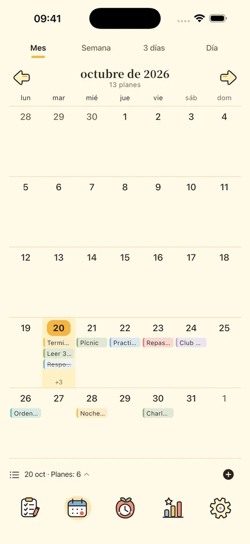
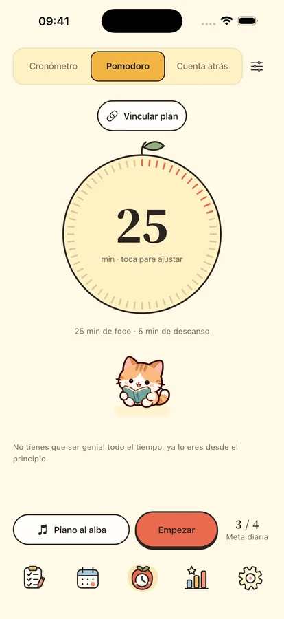
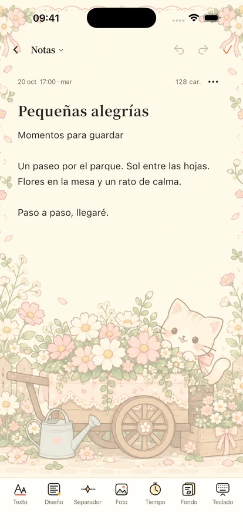

Un poco de calma.
Un poco de compañía.
Organiza tus planes, concéntrate en una cosa y guarda tus ideas y fechas especiales junto a pequeños compañeros.
Para iPhone y iPad · Lanzamiento en preparación

Una cosa a la vez.
Empieza por algo pequeño
Espacio para tus planes, tu tiempo y un poco de ánimo.

Cada plan en su lugar.
Distingue importancia y urgencia con cuatro cuadrantes. Revisa el día, la semana y el mes con calendario y línea de tiempo. Incluye planes recurrentes, subtareas y recordatorios locales.
Tiempo para lo que tienes delante.
Pomodoro, cuenta atrás o cronómetro con 8 piezas sin conexión y 11 sonidos ambientales. Cuatro compañeros y un reloj de láminas te acompañan al concentrarte y descansar. La biblioteca completa requiere Plus o la prueba de tres días; una pieza, un ambiente y el silencio son gratis.



Guarda ideas y días especiales.
Memos con formato, fotos y papeles, organizados por fecha y categoría. Espera cumpleaños y aniversarios con cuentas atrás. Los widgets de planes, calendario, concentración, eventos y memos requieren iOS 17 o posterior.
Tu día a día te pertenece.
Usa las funciones locales sin iniciar sesión. Las copias en la nube son manuales y el análisis está desactivado por defecto. Exporta tu contenido y gestiona tus opciones de privacidad.
Privacidad